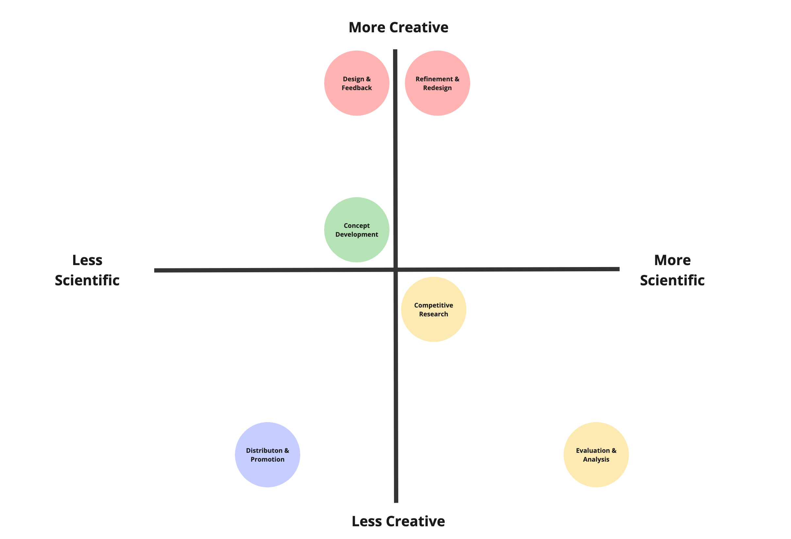

Boost your company's ROI by striking the perfect harmony of creativity and science in your content strategy.
Picture this: on one side, you've got the creative maestros, spinning stories and crafting messages that hit the heart. On the other, the data-driven wizards, armed with analytics and algorithms, swear by numbers to win the game. But here's the real kicker: the magic happens when these worlds collide.
In this article, we're not just picking sides; we're bridging gaps. It's about striking that sweet spot where Picasso meets Pythagoras. So, buckle up as we provide you with a roadmap for unleashing your most creative content in a scientific manner.
What are the Main Areas of Marketing Creative?
The most crucial areas of creative development are as follows:
Content Creation: All written copy, graphic design, photography, video, etc. that is delivered organically to prospects and customers
Advertising Creative Development: Content specifically created for advertising (i.e. display ads, search ads, social ads, video ads, etc.)
User Experience: The design of websites, apps that ensures ease of use and a positive customer experience
Brand Identity: These are logos, color schemes, typography, and imagery that distinguish you from the competition
For the remainder of this article, I will focus particularly on Advertising Creative Development, as this is where the majority of marketing budgets are directed and it has the highest impact on ROI.
What is the Process for Developing Marketing Creative?
While there are a million books on the developing creative materials for marketing purposes, the process for developing marketing creative boils down to this circular process:
Competitive Research and Analysis: Understand the target audience, including their preferences, behaviors, and needs.
Concept Development and Planning: Generate a wide range of ideas and concepts, and define how this campaign will fit into the larger strategy.
Design and Feedback: Through iterative design, develop content with feedback from key stakeholders.
Distribution and Promotion: Launch assets into production and share across channels as planned.
Evaluation and Analysis: Analyze performance data and feedback to further improve ROI.
Refinement and Redesign: Make adjustment based off conclusions from data.

The Art of Content Optimization
The heart of the creative process is during the Design & Feedback and Refinement & Redesign stages. The marketing creatives are at work in Adobe Photoshop or Wordpress. The writers are crafting blog posts. This is when you are crafting a compelling message or value proposition. Your creative engines are most obviously at full speed!
During the Concept Development and Competitive Research, the marketing creatives are likely using a more balanced approach. These stages involves a great deal of brainstorming and researching other businesses. These are the stages where the storytelling begins. What stories are your competitors telling? How do these stack up to yours?
The Distribution & Promotion and Evaluation & Analysis stages involve very little creative work. For Distribution & Promotion, this is simply disseminating the message — most creative consider it busy work. For Evaluation & Analysis, this is pure number crunching, the farthest thing from creativity that their job requires.
The Science of Content Optimization
The heart of the scientific process is during the Evaluation & Analysis stage. It involves rigorous data analysis to measure the performance of creative content, identify successes and failures, and understand audience engagement.
For all the other stages, you will notice that they all fall towards the middle of the spectrum. This is because each of these steps requires feedback. In areas where feedback is required, science should be considered. Wherever an important decision is being made, you should ask yourself: “Do we have accurate data for this?” If the answer is yes, consider it. If the answer is no, find a way to track it. With this mentality, the science of content optimization will become more ingrained in all of your processes.
The scientific side of content marketing emphasizes the need for testing, measuring, and refining content based on real-world data. It's about understanding what works and what doesn't, and using this knowledge to optimize content performance. This approach ensures that creative efforts are not just artistically sound but also effective in achieving marketing objectives.
What is A/B Testing and Why is It Important?
A/B testing, also known as split testing, is a method used to compare two versions of a webpage, email, app, or other marketing assets to determine which one performs better. Here’s how it works:
Identify the Testing Goal: The first step is to identify what you want to improve. This could be anything from increasing email open rates, click-through rates on a webpage, conversion rates, or any other key performance indicator (KPI).
Create Two Variants: You then create two versions of the item you are testing. Version A is usually the current version (the control), while Version B is the modified version (the treatment). The change between A and B can be as simple as a different headline, button color, email subject line, or more complex changes like page layouts or navigation structures.
Split Your Audience Randomly: The audience is randomly divided into two groups, ensuring that each group is statistically similar. One group is exposed to Version A, and the other to Version B.
Run the Test: Both versions are run simultaneously over a period to collect data. This period depends on the amount of traffic you receive and the statistical significance you need.
Analyze the Results: After the test is complete, the results are analyzed to see which version performed better. This analysis is typically based on statistical methods to ensure that the results are due to the changes made rather than random chance.
Implement the Findings: If one version clearly outperforms the other, you can implement the more successful version. If there's no clear winner, the test can provide valuable insights into user preferences and behavior.
A/B testing is the easiest and most effective way of joining the scientific aspects of marketing with the creative. By testing different elements, you can understand what elements most resonate with your audience. It can significantly increase conversion rates through even minor adjustments, while also minimizing risks by allowing for preliminary testing on smaller audience segments. Most importantly, A/B testing facilitates data-driven decision-making, ensuring that changes and optimizations are based on solid evidence rather than mere assumptions or guesses.
Best Tools for A/B Testing
Websites: VWO or GA4
VWO (Visual Website Optimizer): Offers a visual editor for creating variants, along with robust analytics to track visitor behavior and conversion rates.
GA4 (Google Analytics 4): Provides advanced analytics and allows you to run A/B tests by integrating with Google Optimize, helping you understand how changes affect user experience.
Landing Pages: Unbounce or Hubspot
Unbounce: Specializes in creating and testing landing pages with a drag-and-drop builder, offering insights into which versions perform better.
Hubspot: Offers a comprehensive marketing platform with A/B testing capabilities for landing pages, enabling you to test different elements and track performance metrics.
Ads: Google Adwords
Google Adwords: Now known as Google Ads, it allows you to test different ad variations, targeting, and bidding strategies to see which performs best in terms of clicks and conversions.
General Creative: Facebook Ad Manager
Facebook Ad Manager: Provides tools to run A/B tests on various ad elements like images, copy, and call-to-action buttons, helping you determine the most effective ad creative for your audience on Facebook.
Email: Hubspot or Mailchimp
Hubspot: Offers email marketing tools within its CRM platform, allowing you to test different email elements like subject lines, content, and send times.
Mailchimp: A popular email marketing tool that provides easy-to-use features for A/B testing different aspects of your email campaigns to improve open and click-through rates.
UX: Hot Jar
Hot Jar: A user experience (UX) and behavior analytics tool that provides heatmaps, session recordings, and surveys to understand how users interact with your website, which can inform A/B testing decisions.
Brand Identity: Focus Groups and Surveys
Focus Groups: Involve gathering a group of people from your target audience to get feedback on different elements of your brand identity.
Surveys: Tools like SurveyMonkey or Google Forms can be used to collect a larger sample of data from your target audience, offering insights into preferences and perceptions of your brand's identity elements.
Conclusion and Key Takeaways
The debate between art and science in content marketing isn't about choosing one over the other; it's about recognizing the value each brings to the table. It's a harmonious blend of both.
Key Takeaways:
Balanced Approach: The best content marketing strategies balance creative storytelling with analytical rigor. While creativity is essential for engaging and resonating with audiences, data and analytics ensure that this creativity is channeled effectively to meet business objectives.
Importance of Each Stage: Every stage in the development of marketing creative, from concept development to evaluation, plays a critical role. The creative aspects shine in content creation and design, while the scientific approach dominates in analysis and optimization.
A/B Testing as a Crucial Tool: A/B testing emerges as a vital tool in marrying the art and science of content marketing. It allows marketers to experiment creatively while grounding their decisions in data-driven insights.
Adaptability and Learning: The landscape of content marketing is ever-evolving. Marketers must be adaptable, willing to learn, and ready to blend creative ideas with new data insights continuously.
Tools and Resources: Utilizing the right tools, like VWO, GA4, Unbounce, Hubspot, and others, can significantly enhance the effectiveness of A/B testing, providing clearer insights into what works and what doesn’t.
Customer-Centric Approach: At the heart of both the art and science of content marketing is the customer. Understanding and responding to customer needs, preferences, and behaviors is paramount.
Iterative Process: Content marketing is not a one-and-done process. It requires continuous refinement and redesign, based on both creative feedback and analytical data.
Get the Guide on AI-Driven Marketing
AI can easily be implemented at any level of marketing. This guide gives you a roadmap to launch your free AI marketing plan.
Thank you! Your submission has been received!
Oops! Something went wrong while submitting the form.
Latest blog posts
Tool and strategies modern teams need to help their companies grow.
How to Build A Digital Marketing Engine
Rev up your marketing engines and transform anomyous people into loyal, VIP customers with this framework.